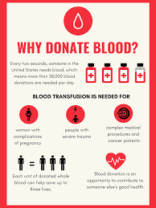

Why it is important to donate blood?
Donating blood is a vital and selfless act that can save lives. Here's why it's important:
-
Life-saving resource: Donated blood is essential for surgeries, trauma cases, cancer
treatments, and patients with chronic illnesses such as sickle cell anemia or severe anemia. One
donation can save up to three lives.
Emergencies and accidents: In accidents or natural disasters, large amounts of blood are needed to treat victims. Blood donations ensure hospitals are equipped to handle such emergencies.
Limited supply: Blood has a limited shelf life. Red blood cells last for 42 days, and platelets only last five days. Continuous donations are needed to maintain a stable supply.
Chronic conditions: Many patients with blood disorders or undergoing treatments like chemotherapy rely on regular transfusions to survive and maintain quality of life.
Community impact: Donating blood helps ensure your community and hospitals have enough resources. It builds a stronger, more prepared healthcare system.
It's a safe process: Donating blood is safe, with strict screening, sterilization, and sanitary procedures in place. It also poses minimal risk to the donor, who typically recovers within a short period.
Health benefits for donors: Some studies suggest that regular blood donation may reduce the risk of heart disease and improve overall cardiovascular health.
Donating blood is a simple, generous act that can make a tremendous difference in the lives of others.

